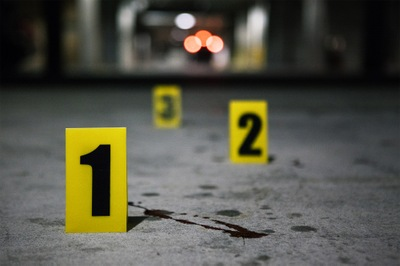

More About Us
Our priority is to help protect you, your children, your communities,
and your businesses from the most dangerous threats facing our
nation—from international and domestic terrorists to spies on U.S. soil,
from cyber villains to corrupt government officials, from mobsters to
violent street gangs, from child predators to serial killers. Along the
way, we help defend and uphold our nation’s economy, physical and
electronic infrastructure, and democracy.

What We Investigate
The FBI's investigative programs include counterterrorism, counterintelligence, cyber, public corruption, civil rights, transnational organized crime, white collar crime, violent crime, and weapons of mass destruction.

How We Investigate
Whether it's the hostage rescue team or the latest intelligence, FBI personnel have a variety of tools and tactics in their investigative toolboxes to keep the public safe.
History
Historical information about the FBI including famous cases and criminals, investigative challenges and milestones, controversies, and the Wall of Honor.